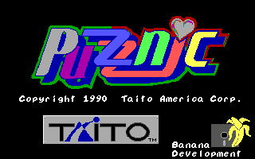
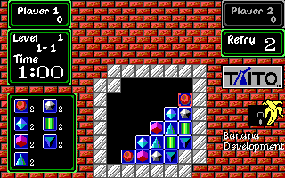

名稱：鑽石方塊 (Puzznic，英文版)
簡介：Taito 1989年出品的類俄羅斯遊戲，1990年移植至DOS。遊戲規則為移動任一個鑽石，
讓其掉落，只要同類鑽石碰在一起即可消去，將方框內鑽石全部消去，即可過關 [待補]。


保護：磁片
備註：若要重設遊戲選項，可刪除CONFIG.DAT後再重新執行。
檔案：crack.rar = 破解檔
操作：
方向鍵 = 移動（玩時配合按著選定鍵）
Enter = 確定
Ins/滑鼠左鍵 = 選定
Space/滑鼠右鍵 = 取消
F1 = 暫停遊戲
F2 = 音樂開關
F3 = 音效開關
F5 = 自行設定關卡
F8 = 放棄關卡
F9 = 重選遊戲關卡
F10 = 結束遊戲回到DOS
遊戲對於滑鼠的移動很不靈敏，常常移了滑鼠，游標卻沒動，因此建議使用鍵盤操控。